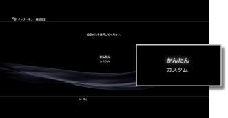
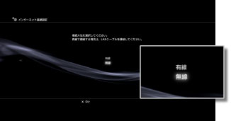
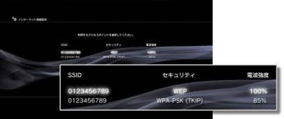
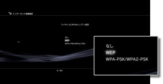
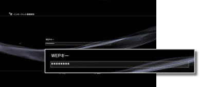

インターネット接続設定（無線）
この設定は、ワイヤレスLAN機能を搭載したPS3™だけで選べます。
インターネットへの接続方法を設定します。インターネット接続の設定は、お使いのネットワーク環境や、機器によって異なります。ここでは、無線でインターネットに接続するときの標準的な設定例を説明します。
1. |
アクセスポイントの設定が済んでいることを確認する。 |
|---|---|
2. |
PS3™にLANケーブルが接続されていないことを確認する。 |
3. |
|
4. |
［インターネット接続設定］を選ぶ。 |
5. |
［かんたん］を選ぶ。  |
6. |
［無線］を選ぶ。  |
7. |
［検索する］を選ぶ。
|
8. |
使用するアクセスポイントを選ぶ。  |
9. |
アクセスポイントのSSIDを確認する。 |
10. |
使用するセキュリティー設定を選ぶ。  |
11. |
暗号化キーを入力する。  暗号化キーの入力を終えると、ネットワーク構成を確認したあと、設定内容の一覧が表示されます。 |
12. |
設定を保存する。 |
13. |
接続テストをする。 |
14. |
接続結果を確認する。 |
 （設定）から
（設定）から （ネットワーク設定）を選ぶ。
（ネットワーク設定）を選ぶ。
ヒント
- 接続に失敗したときは、画面の指示に従って設定内容を確認してください。インターネットサービスプロバイダーの資料や、使用しているネットワーク機器の説明書もあわせてご覧ください。
- 手順7で［アクセスポイント別自動設定］＞［AOSS™］を選んだときにすぐに接続テストを行うと、ルーター側の設定が完了せず、接続に失敗する場合があります。接続テストをするときは、約1～2分時間を空けてください。